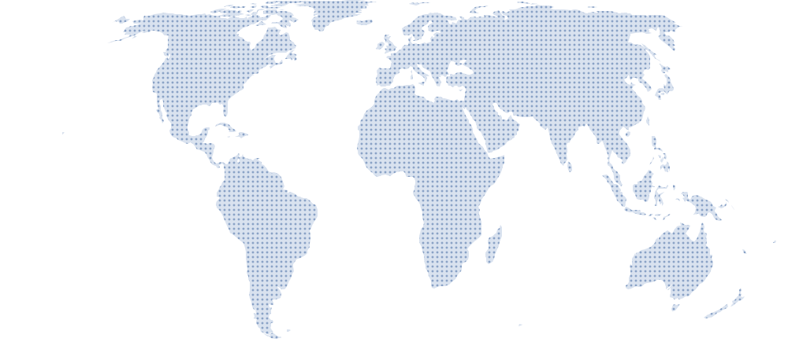

Pittsburgh, Pennsylvania, USA
ICKM 2010
Great Tradition and Universal Experience

- Location
- Pittsburgh, Pennsylvania, USA
- Venue
- Hilton Pittsburgh
- Dates
- October 22–23, 2010
- Joint event
- Held just before the ASIS&T Annual Meeting.
Pittsburgh, Pennsylvania, USA
Great Tradition and Universal Experience
